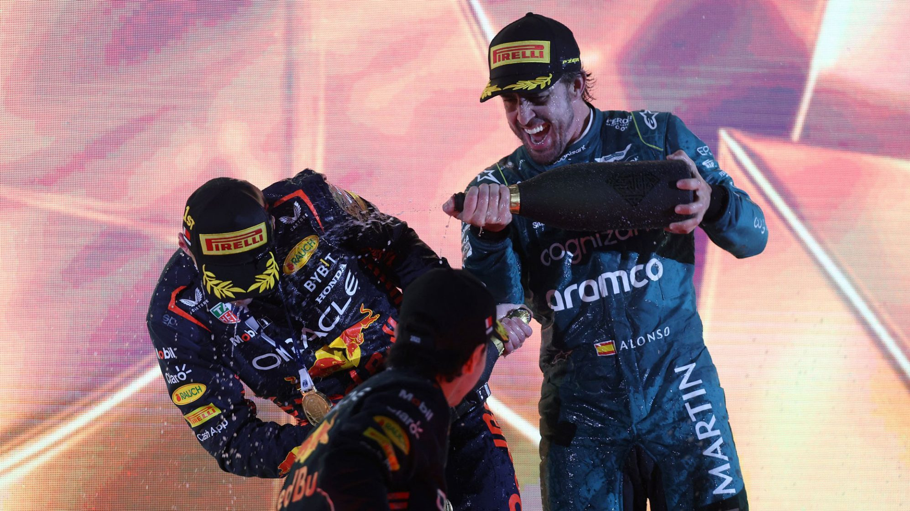

Résumé GP de Bahrein 2023
Rédigé par Clément Lazzarini, le 06/03/2023
Enfin le retour !
La saison 2023 de Formule 1 a débuté ce week-end, après une longue pause depuis le Grand Prix d'Abou Dhabi l'an dernier. Un retour plein de questionnement au sujet des hiérarchies en place, suite aux essais hivernaux la semaine dernière. Effectivement, des tendances commençaient à se dessiner, mais personne ne pouvait être sur de riens, car tout le monde cache (ou non) un peu son jeu.
La folie Alonso
Une écurie qui n'avait finalement pas caché son jeu, c'est bien Aston Martin ! C'est bel et bien la surprise de ce lancement de saison 2023 : Aston Martin va se bagarrer aux avant-postes. Fernando Alonso de l'écurie Aston Martin a affiché un rythme impressionnant lors des essais hivernaux et tout au long du week-end. Et cela, c'est confirmer. Au terme d'une course très bien gérée par l'écurie et l'espagnol, Fernando Alonso décroche la troisième place du podium. Devant la Ferrari de Sainz et les deux Mercedes d'Hamilton et Russell! Fernando Alonso est un concurrent à surveiller de près cette saison.
Red Bull et Max déjà titrés ?
Fernando Alonso troisième, une Ferrari au pied du podium, l'autre qui abandonne et les Mercedes qui collent difficilement ce petit groupe, cela annonce un joli spectacle cette année. Mais pour quoi ? La deuxième place constructeur et la troisième au championnat pilotes ? Car oui, même si cette bataille Ferrari, Aston Martin et Mercedes semble excitante, celle pour le titre semble elle déjà perdue. Red Bull a tout simplement écraser toute la concurrence ce week-end. Ils ont eu un rythme incroyable et ils étaient à des années-lumière devant les autres. Ajouter à cela le talent de Max Verstappen, vous avez le mélange parfait titre constructeur et pilote.
Mais rien n'est perdu ! Cette saison compte 23 Grand Prix et Red Bull ne pourra pas faire évoluer ça voiture comme bon leur semble du fait du budget cap ainsi que la "pénalité" suite au dépassement de ce dernier l'an passé. Peut-être alors une des trois écuries derrière arriveront à les rattraper. Mais si oui, quand..?
Et derrière alors ?
Même si devant il y avait énormément de choses à analyser, derrière aussi il s'en est passé des choses à voir !
Un rapide tour d'horizon :
Alpine à exceller dans le médiocre pour Ocon et à bien gérer la remontée dans les points de Gasly !
McLaren va connaître une saison très difficile... Pourtant, il y a un énorme potentiel pilote.
Alfa Roméo semble avoir bien travaillé, mais manque un peu d'appui aérodynamique.
Alpha Tauri était à la porte des points, mais semble un peu juste.
Haas parait être au niveau de Alpha Tauri.
Williams est l'écurie qui m'a le plus impressionné ! Pas mauvais en qualification et dans les points pour la première course, cela faisait longtemps que l'on n'avait pas vu cela chez Williams !
On se retrouve dans 2 semaines pour le Grand Prix d'Arabie Saoudite !
Crédit photo : www.f1.com